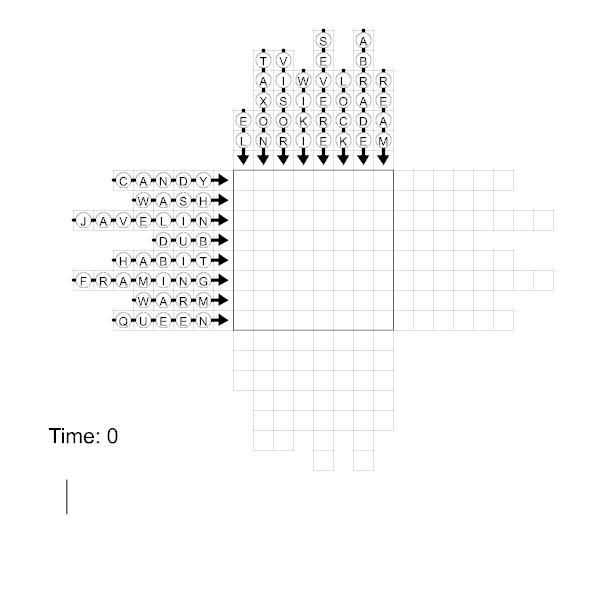

Solution: Cuspidation
Answer: SLOW DOWN
Written by Chris Jones
Cuspidation is kind of not a real word, and the meaning intended by this puzzle is, "the process of getting poked by a sharp point". This puzzle has a number of sharp arrowheads, and from the graphic at the top it's clear that these are intended to pierce the circles somehow. Before worrying about how this happens, a first step in this puzzle is to match the letters below with the spaces above so that each arrow has a word written along it. This can be done uniquely using non-obscure words, which are:
ELTAXON
VISOR
WIKI
SEVERE
LOCK
ABRADE
REAM
CANDY
WASH
JAVELIN
DUB
HABIT
FRAMING
WARM
QUEEN
It's not necessary to finish all the words before starting the next step. Through the other visual cues in the puzzle, solvers should deduce that what they are looking at is the result of the following process: arrows are "launched" from the opposite side of the grid at different times and move at 1 square per second across the grid. When two arrows intersect, if the head of an arrow hits the body of another, the letter in that circle is "knocked out", and the letter is written on the timeline below. (If two arrow bodies are in the same square, nothing happens, and two heads are not allowed to be in the same square.) Here is the process as it occurs:
The launch times of each arrow are not known to solvers, and must be deduced based on the intersection letters. The intersection time constraints are pretty powerful and any logical errors should become apparent within a few arrows. When the times are modified by the given changes, and converted to letters, solvers receive the message NEWTIMESOFLAUNCH (reading up then right). The meaning of this message is to use N = 14, E = 5, W = 23, T = 20 ... as new launch times for the arrows, and run the process again. Here is the new process as it occurs:
Writing the letters that are knocked out on a new timeline creates a phrase, HINDER OR DECELERATE. This is a clue for SLOW DOWN, which is the answer.
Author’s Notes
Back in 2017 I was brainstorming puzzle ideas for the answer FIREARMS REGULATION, and I came up with Learn to Play (Galactic Puzzle Hunt 2017), Special Snowflake (Galactic Puzzle Hunt 2018), and this puzzle. Just goes to show what taking an ugly answer can do for you! Don't worry, I've finally finished all ideas for FIREARMS REGULATION so there is no need to face 2017 puzzles again.
This puzzle started when I asked myself, “can I make a new logic puzzle where all of the rules are clued visually?” Then came the idea to do something time-based with intersecting things moving through a grid, and from there it was a lot of trial and error to find an arrow-intersection logic puzzle that was actually fun and doable (originally the puzzle was called “Arrows in Time and Space” because there was this “time” arrow that gave all the intersections of these “space” arrows moving through the grid. A little later it was called “Do the Arrow Mambo!”).
The second half of this puzzle used to be a lot less cool: also given with the puzzle was a grid of letters, and solvers just had to pull out the letters where an arrow head intersected an arrow body. Fortunately, the puzzle got a lot cleaner when I thought of the current idea to use a second launch to write letters on a new timeline. The only hard part was finding the phrase NEWTIMESOFLAUNCH, which had to serve both as a cluephrase and also as the actual new times of launch. As it turns out, about 5% of random launch times have no arrows that collide head-on, so I wrote down about twenty reasonable-enough cluephrases (USETHESESTARTTIMES, MODIFYLAUNCHTIME, STARTONNEWSCHEDULE, SHIFTTIMESOFLAUNCH, etc) and simulated them all to find a valid phrase.
The solution GIFs were made using Processing.